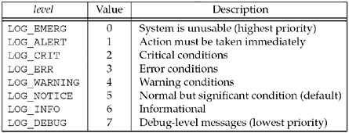
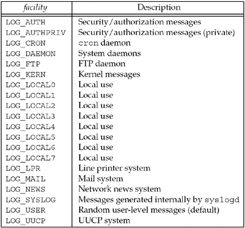
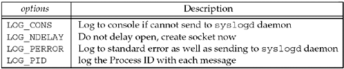

| [ Team LiB ] |
|
13.3 syslog FunctionSince a daemon does not have a controlling terminal, it cannot just fprintf to stderr. The common technique for logging messages from a daemon is to call the syslog function.
Although this function was originally developed for BSD systems, it is provided by virtually all Unix vendors today. The description of syslog in the POSIX specification is consistent with what we describe here. RFC 3164 provides documentation of the BSD syslog protocol. The priority argument is a combination of a level and a facility, which we show in Figures 13.1 and 13.2. Additional detail on the priority may be found in RFC 3164. The message is like a format string to printf, with the addition of a %m specification, which is replaced with the error message corresponding to the current value of errno. A newline can appear at the end of the message, but is not mandatory. Figure 13.1. level of log messages. Figure 13.2. facility of log messages. Log messages have a level between 0 and 7, which we show in Figure 13.1. These are ordered values. If no level is specified by the sender, LOG_NOTICE is the default. Log messages also contain a facility to identify the type of process sending the message. We show the different values in Figure 13.2. If no facility is specified, LOG_USER is the default. For example, the following call could be issued by a daemon when a call to the rename function unexpectedly fails: syslog(LOG_INFO|LOG_LOCAL2, "rename(%s, %s): %m", file1, file2); The purpose of facility and level is to allow all messages from a given facility to be handled the same in the /etc/syslog.conf file, or to allow all messages of a given level to be handled the same. For example, the configuration file could contain the lines kern.* /dev/console local7.debug /var/log/cisco.log to specify that all kernel messages get logged to the console and all debug messages from the local7 facility get appended to the file /var/log/cisco.log. When the application calls syslog the first time, it creates a Unix domain datagram socket and then calls connect to the well-known pathname of the socket created by the syslogd daemon (e.g., /var/run/log). This socket remains open until the process terminates. Alternately, the process can call openlog and closelog.
openlog can be called before the first call to syslog and closelog can be called when the application is finished sending log messages. ident is a string that will be prepended to each log message by syslog. Often this is the program name. The options argument is formed as the logical OR of one or more of the constants in Figure 13.3. Figure 13.3. options for openlog. Normally the Unix domain socket is not created when openlog is called. Instead, it is opened during the first call to syslog. The LOG_NDELAY option causes the socket to be created when openlog is called. The facility argument to openlog specifies a default facility for any subsequent calls to syslog that do not specify a facility. Some daemons call openlog and specify the facility (which normally does not change for a given daemon). They then specify only the level in each call to syslog (since the level can change depending on the error). Log messages can also be generated by the logger command. This can be used from within shell scripts, for example, to send messages to syslogd. |
| [ Team LiB ] |
|